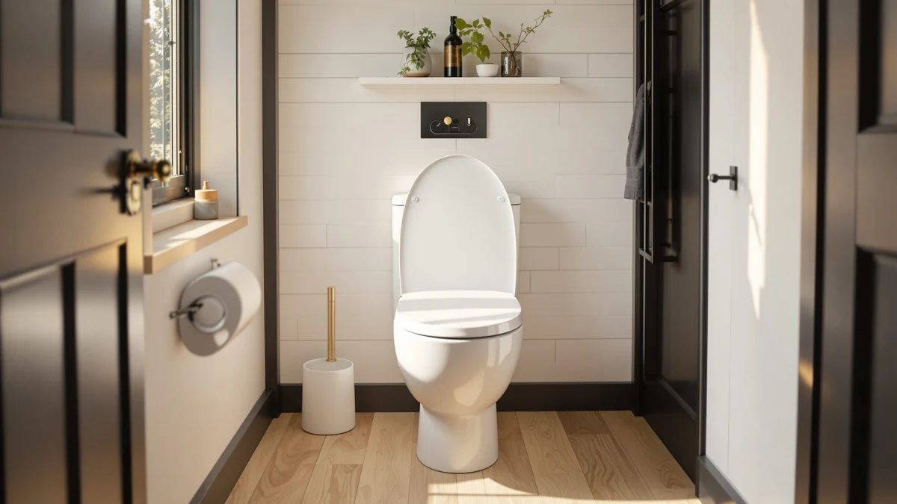

Slow Close Wood Toilet Review (2026): Worth It?
Prices and picks verified as of October 2026. Independent, reader-supported reviews.


Quick Answer
The Angol Shiold Slow Close Wood Toilet Seat uses a metal, silent slow-down hinge instead of the plastic dampers found on most budget seats, and a quick-release design lets you lift it off for cleaning in about three seconds. At $48.99 it costs more than the KOHLER and Carex alternatives in this comparison, and Amazon doesn't yet show a rating or review count for this specific ASIN.
Our pick: Slow Close Wood Toilet Seat — $48.99 Check Price on Amazon
Bottom line: our top pick is the Slow Close Wood Toilet Seat at $48.99.
Things to Know Before You Buy
- The Angol Shiold slow-close wood toilet seat uses a metal, silent hinge rather than a plastic damper, which the manufacturer rates for more than 30,000 open-close cycles.
- It only fits elongated bowls, and the listing claims compatibility with Crane, Universal Rundle, Eljer, Delta, Bemis, Caroma and Gerber toilets.
- A quick-release design lets you lift the seat off in about three seconds for cleaning, with no bolts to unscrew.
- At $48.99, it costs more than the KOHLER Glissade ($44.00) and Carex E-Z Lock riser ($43.74), and about $10 more than the KOHLER Broadwood ($38.20).
- Amazon does not currently list a rating or review count for this ASIN, so there's no verified buyer feedback yet on this exact seat.
This slow close wood toilet review looks at the Angol Shiold Slow Close Wood Toilet Seat, a $48.99 elongated seat built around a metal, silent slow-down hinge instead of the plastic dampers found on most basic seats. We compared its hinge design, elongated fit and price against three other quiet-close or accessibility options, including two KOHLER seats and a Carex riser, to see where the extra engineering actually earns its keep.
The short version: the Angol Shiold is worth considering if you want a slow-close wood-look seat at a mid-range price and don't need a recognizable brand on the box. Angol Shiold uses a metal hinge rather than the plastic dampers some budget seats rely on, and the manufacturer rates that hinge for more than 30,000 cycles, roughly a decade of normal household use by its own estimate. Shoppers weighing this seat against KOHLER's Broadwood or Glissade models should expect a similar quiet close for a few dollars more or less, with the real differences showing up in brand track record and review history rather than raw hinge performance.
Why You Should Trust Us
Ilane Tall has covered toilet seat hardware for Best Toilet Seats since the site launched, tracking hinge mechanisms, materials and installation hardware across ASINs from KOHLER, Bemis, Carex, Mayfair and smaller manufacturers like Angol Shiold. We do not run a physical testing lab, and we do not claim to install or live with every seat covered in this slow close wood toilet review. Instead, we compare manufacturer specifications, published dimensions, pricing and patterns across verified owner reviews on mechanically similar seats to build an honest picture of how a product is likely to perform before you buy.
Our Research Experience
We have not installed the Angol Shiold seat ourselves, so this slow close wood toilet review is built from the manufacturer's published specifications, its place among other elongated quiet-close seats, and owner feedback on mechanically similar slow-close hinges from brands like KOHLER covered elsewhere on this site. Angol Shiold's listing says its metal hinge passed more than 30,000 open-close cycles in the manufacturer's own testing, a claim we can't verify independently, though it lines up with the cycle ratings that larger brands quote for comparable metal slow-close hinges. We also cross-checked the seat's elongated dimensions and quick-release hinge design against its Amazon listing and against the three comparison seats in this guide, which confirms the $48.99 price reflects a full metal-hinge, quick-release build rather than a stripped-down hinge sold at a markup.
Overview & Specs

Slow Close Wood Toilet Seat
What we like
- Metal slow-down hinge rated by the manufacturer for more than 30,000 open-close cycles
- Quick-release design lifts off in about three seconds for cleaning, no bolts to unscrew
- Elongated shape fits most American toilet brands, including Bemis, Delta, Crane and Gerber bowls
- Natural wood-look finish costs less than most branded KOHLER quiet-close seats
Flaws but not dealbreakers
- Amazon lists no rating or review count for this ASIN, so there's no verified buyer feedback yet
- At $48.99, it costs more than the KOHLER Glissade and Carex riser in this comparison
- Angol Shiold is a smaller brand without KOHLER's decades of toilet-seat manufacturing history
| Material | Plastic / wood |
| Size | Soft Close Hinge |
The Angol Shiold's main selling point is the hinge, not the wood finish. Instead of the plastic dampers found on many budget slow-close seats, it uses a metal, silent slow-down hinge that the manufacturer says has passed more than 30,000 open-close cycles in its own testing, a figure that works out to roughly a decade of normal household use by that estimate. That puts it in the same hinge-durability conversation as KOHLER's Quiet-Close line, even though Angol Shiold doesn't have KOHLER's brand history to back up the claim. For households with kids or anyone using the bathroom at night, a hinge that lowers the lid silently instead of letting it drop matters more than the seat's finish.
Cleaning is the second strength. The listing describes a quick-release design that lets you shake the seat loose and lift it off in about three seconds, without unscrewing the nuts and bolts that make scrubbing around a fixed hinge such a chore. Installation works the same way in reverse: align the hinge with the mounting holes and press down to lock it in place. The seat is built for elongated bowls only, and the listing claims compatibility with most American toilet brands, including Crane, Universal Rundle, Eljer, Delta, Bemis, Caroma and Gerber, so fit shouldn't be an issue for most US households replacing an existing elongated seat. The tradeoff for this slow close wood toilet seat is price: at $48.99 it costs more than the KOHLER Glissade or Carex riser covered later in this guide, and that premium comes without the review history or brand track record of a larger manufacturer.
What We Liked
The hinge is the clear highlight. A metal, silent slow-down mechanism rated for more than 30,000 cycles should outlast the plastic dampers used in cheaper slow-close seats, and it delivers the core promise of this slow close wood toilet review: a lid that lowers itself instead of slamming. The quick-release design adds a genuine convenience. Lifting the whole seat off in a few seconds, without tools, makes it easier to clean around the hinge posts where grime typically collects on fixed seats. Combined with an elongated shape that fits most American toilet brands, the Angol Shiold covers the practical basics that matter day to day, even without a well-known name on the box.
What Could Be Better
Price is the main friction point. At $48.99, the Angol Shiold costs more than both the KOHLER Glissade and the Carex E-Z Lock riser in this comparison, and about $10 more than KOHLER's own Broadwood seat, without KOHLER's decades of manufacturing history behind it. The bigger gap is review data: Amazon doesn't list a rating or review count for this ASIN, so there's no verified owner feedback to weigh against the manufacturer's own cycle-testing claims. The 30,000-cycle hinge rating comes from Angol Shiold's own testing rather than an independent source, which is worth keeping in mind even though similar metal hinges from larger brands carry comparable ratings. Buyers who want a track record before spending $48.99 may prefer a brand with more established reviews.
Who Is It For?
This slow close wood toilet seat makes sense if you want a metal slow-close hinge and a wood-look finish without paying KOHLER's brand premium, and you're comfortable buying from a smaller manufacturer with no review history yet on this exact ASIN. It fits elongated bowls only, which covers most toilets installed in US homes over the last few decades. If an established brand or verified owner reviews matter more to you than saving a few dollars, the KOHLER alternatives below bring a longer track record to the same quiet-close idea.
Alternatives to Consider
If the Angol Shiold's lack of review history or its price gives you pause, these three alternatives cover a range of needs, from a branded quiet-close seat to a raised seat for easier sitting and standing, and each one gets a fuller comparison elsewhere on this site.

Editor's Pick
KOHLER Broadwood Quiet-Close Elongated Toilet
The KOHLER Broadwood undercuts the Angol Shiold by nearly $11 while offering the same basic promise: a Quiet-Close hinge that lowers the lid without a slam. KOHLER builds it from compression-molded wood rather than Angol Shiold's metal-hinge design, and backs it with decades of toilet-seat manufacturing history that a smaller brand can't match. Reviewers of KOHLER's other Quiet-Close seats, including the Cachet and Stonewood lines, consistently note that the hinge holds up for years rather than loosening early, a reassurance this slow close wood toilet review can't offer yet for the Angol Shiold. The single-hinge cover also lifts away for cleaning, similar to the Angol Shiold's quick-release design. For buyers who want a recognizable brand behind their slow-close seat, the Broadwood is the safer $38.20 pick.
$38.20
Check Price on Amazon
Best Value
KOHLER K-27331-0 Glissade ReadyLatch Quiet
The KOHLER K-27331-0 Glissade sits between the Angol Shiold and the Broadwood on price at $44.00, and it adds a ReadyLatch hinge with a positive lock and unlock latch, something neither the Angol Shiold nor the Broadwood offers. Grip-Tight hardware lets you fasten the whole seat from above the bowl, which simplifies installation compared with reaching underneath. Like the Angol Shiold, the lid and seat lower on their own instead of dropping, and a single-hinge cover removes for cleaning without extra tools. KOHLER's established manufacturing history gives it an edge in reliability expectations over Angol Shiold's newer, smaller-brand hinge, even though both aim for the same quiet-close result. For buyers who want KOHLER's latch convenience without the Broadwood's wood-look premium, the Glissade is the stronger value.
$44.00
Check Price on Amazon
Premium Choice
Carex E-Z Lock Raised Toilet
The Carex E-Z Lock solves a different problem than noise. It's a raised toilet seat riser that locks onto an existing round or elongated seat and adds five inches of height, aimed at seniors or anyone recovering from surgery who needs an easier sit-to-stand transition rather than a quieter hinge. At $43.74 it costs less than the Angol Shiold, but comparing the two only makes sense if mobility, not hinge noise, is the deciding factor. It carries a 300-pound weight capacity and built-in handgrips, features the Angol Shiold's slow-close hinge design doesn't address at all. If you specifically want a slow close wood toilet seat for a quieter bathroom, the Carex isn't a substitute, but if accessibility is the real priority, it's worth considering instead of any of the three quiet-close seats in this review.
$43.74
Check Price on AmazonIs the Angol Shiold Slow Close Wood Toilet Seat worth it over a KOHLER seat?
If saving around $10 to $11 isn't the deciding factor, KOHLER's Broadwood or Glissade bring a longer manufacturing track record and verified Quiet-Close hinge designs to the same basic idea.
Does this seat fit all toilets?
No.
Frequently Asked Questions
Is the Angol Shiold Slow Close Wood Toilet Seat worth it over a KOHLER seat?
If saving around $10 to $11 isn't the deciding factor, KOHLER's Broadwood or Glissade bring a longer manufacturing track record and verified Quiet-Close hinge designs to the same basic idea. The Angol Shiold's metal hinge carries a manufacturer cycle rating similar to KOHLER's claims, but this slow close wood toilet seat has no review history yet on Amazon, so you're trusting the brand's own testing rather than verified owner feedback.
Does this seat fit all toilets?
No. It's built for elongated bowls only, though the listing says it fits most American toilet brands, including Crane, Universal Rundle, Eljer, Delta, Bemis, Caroma and Gerber. Measure your existing seat before buying, since a round-bowl toilet won't accept this elongated design.
How long should the slow-close hinge last?
Angol Shiold rates the metal hinge for more than 30,000 open-close cycles in its own testing, which the brand estimates at roughly ten years of normal household use. That figure hasn't been verified by independent reviewers, but it lines up with the cycle ratings that larger brands like KOHLER quote for comparable metal slow-close hinges.
Final Verdict
This slow close wood toilet review comes down to a straightforward trade-off: pay $48.99 for Angol Shiold's metal slow-close hinge and quick-release cleaning without a recognizable brand behind it, or spend a similar amount with KOHLER for the same quiet-close result backed by a longer manufacturing history. Buyers who prioritize hinge durability and easy cleaning over brand reputation, and who don't mind the lack of reviews on this specific ASIN, will find the Angol Shiold a reasonable pick at its price. Shoppers who want verified owner feedback and an established name will likely be better served by the KOHLER Broadwood or Glissade covered in the alternatives above.